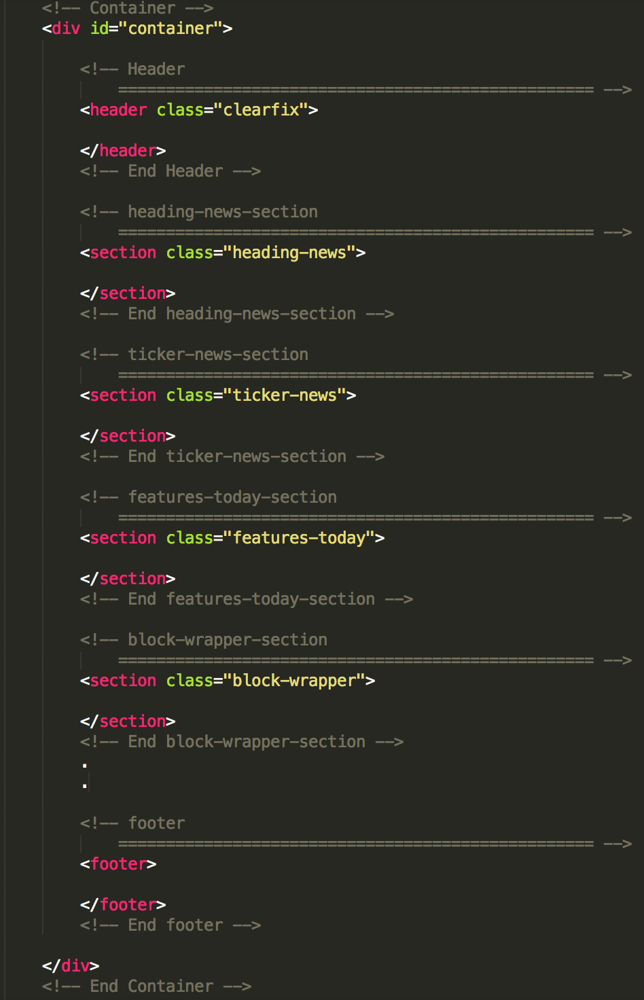
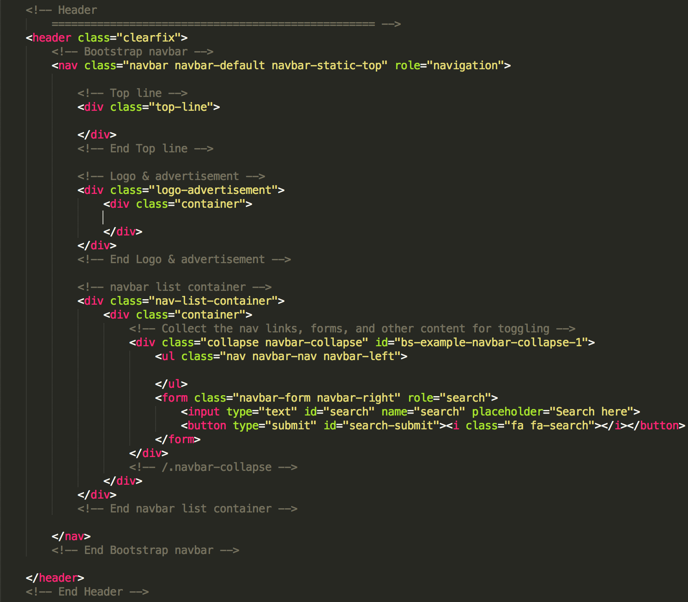
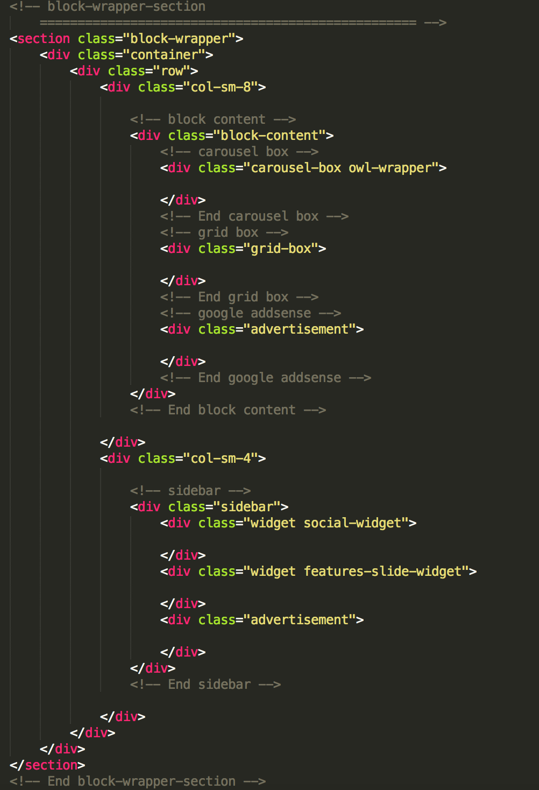
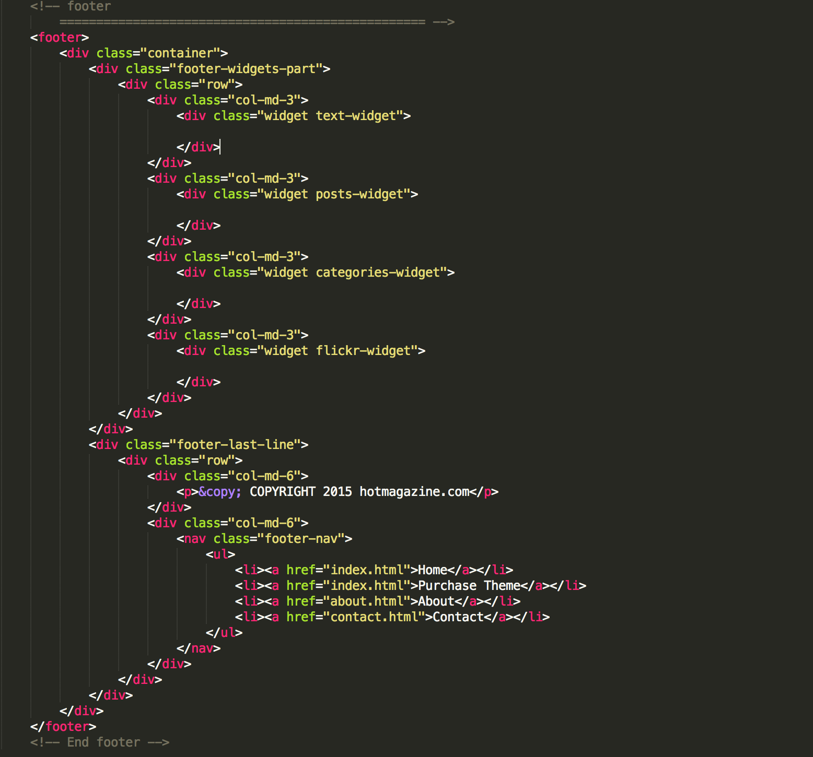
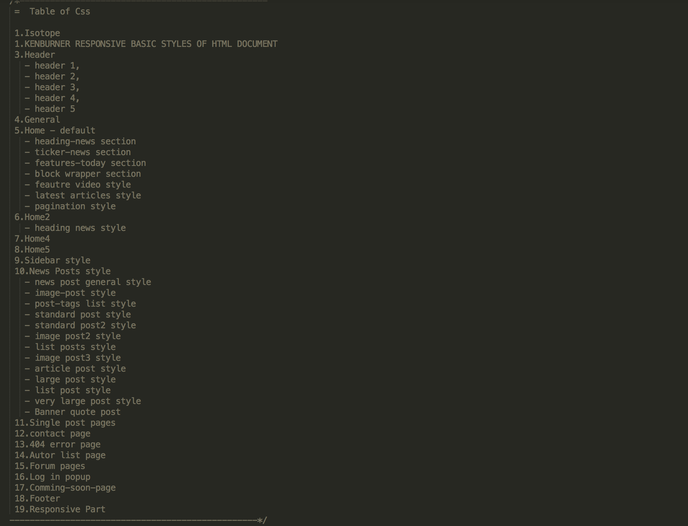
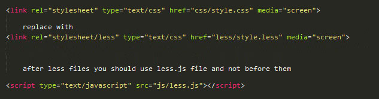
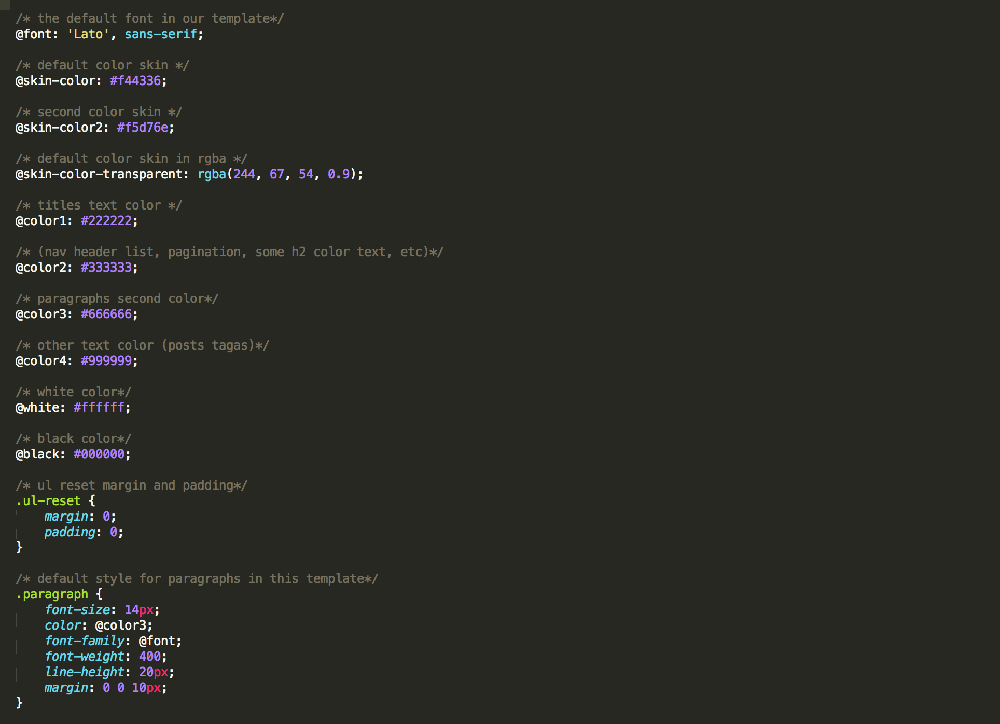
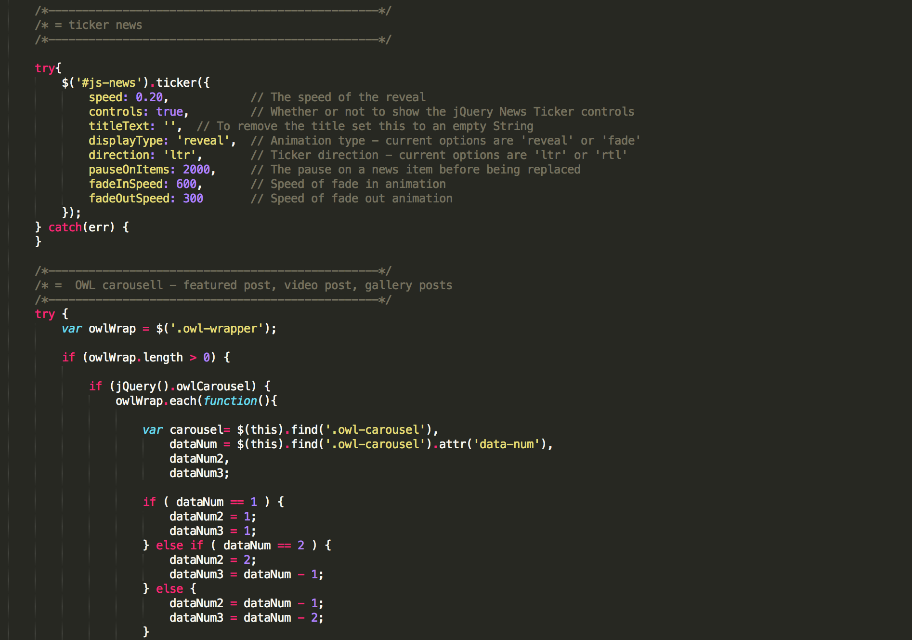

Hotmagazine
News & Magazine HTML5 Template
Thank you for purchasing our Template. If you have any questions that are beyond the scope of this help file, please feel free to email us via our user page contact form here. Thank you very much!
Hotmagazine is Html5 + CSS3 News & Magazine template and works fine in all major browsers and IE from version 9. It's powered by jQuery and you'll find nice and discreet interactivity. The code is clearly written and you will find comments for each section parts.
Lets take a closer look at the structure of Html, Css, JavaScript...
Folder Structure
When you unpack downloaded archive from ThemeForest.net you'll get folder containing 2 folders.
Here they are:
- HTML - Main folder for template
- Documentation - Documentation for Hotmagazine site template
When you open HTML Package you will see 11 Folders corresponding 11 versions of our Hotmagazine.
Here they are:
- dark-version
- default
- design
- fashion
- game
- politics
- showbiz
- sport
- tech
- travel
- video
HTML Structure
The Default version of Hotmagazine template contains 35 html pages. These pages are
404-error.htmlallfooter.htmlautor-details.htmlautor-list.htmlcomming-soon.htmlcontact.htmlforum-category.htmlforum-topic.htmlforums.htmlheader2.htmlheader3.htmlheader4.htmlheader5.htmlhome2.htmlhome3.htmlhome4.htmlhome5.htmlhome6.htmlindex.htmlnews-category1.htmlnews-category2.htmlnews-category3.htmlnews-category4.htmlnews-category5.htmlnews-category6.htmlsingle-post.htmlsingle-post2.htmlsingle-post3.htmlsingle-post4.htmlsingle-post5.htmlsingle-post6.htmlsingle-post7.htmlsingle-post8.htmlunderconstruction.htmlvideo.html
Body part of the Html file contains a main div tag container, and this is divided in other main sections and each of these sections is further divided into smaller parts:
- CONTAINER
Main building blocks of Container looks like in the photo

- Header
Header is based in boostrap framework with logo, advertisement, navigation menu, search bar, and topline with weather, time, log-in and social icons.

- CONTENT Sections
- Different section
we have included different sections, such as ticker new, heading section, block-wrapper etc.
Most important section is block wrapper with with news posts block and sidebar, let's see it structure below:

- Footer
Different widgets, last line with copyright line and navigation menu

Grid:
Based on Bootstrap, a sleek, intuitive, and powerful front-end framework.
Bootstrap makes use of certain HTML elements and CSS properties that require the use of the HTML5 doctype. Include it at the beginning of all your projects.
The default Bootstrap grid system utilizes 12 columns, the grid adapts to be 724px and 1170px wide depending on your viewport. Below 767px viewports, the columns stack Hotmagazinely.
For a simple two column layout, create a .row and add the appropriate number of .col-md-* columns. As this is a 12-column grid, each .col-md-* spans a number of those 12 columns, and should always add up to 12 for each row (or the number of columns in the parent).

Given this example, we have two div tags with class .col-md-6, making for 12 total columns and a complete row.
Move columns to the right using .col-md-offset-* classes. Each class increases the left margin of a column by a whole column. For example, .col-md-offset-4 moves .col-md-4 over four columns.
CSS Files and Structure
In folder "css" you will find 9 CSS files
- bootstrap.min.css
- ticker-style.css
- magnific-popup.css
- flexslider.css
- jquery.bxslider.css
- font-awesome.css
- owl.carousel.css
- owl.theme.css
- style.css
Description:
-
In style.css which is main style sheet for "Hotmagazine" site template. This file contains all of the specific stylings for the page.
To edit a specific part of the page, simply scroll down, every section is well commented and you can find easy the appropriate style that needs to be edited. In example:

bootstrap.min.css - grid structure based on Bootstrap Framework.
Styles for bxslider. i have used this slider in different slide news posts
-
Also we have a unique files owl.carousel.css and owl.theme.css for carousells posts
-
Also we have a file magnific-popup.css for video post. This enable opening video in popup iframe from youtube or vimeo. Also this file is used for login popup you have active only in forum pages, if you click on login at the topline in header.
-
Also we have a file for font awesome font-awesome.css . If you want to know more about the awesome fonts you can read more here
-
ticker-style.css is for news ticker, or breaking line posts.
Less files
we have included also two files in folder less
- variables.less
- style.less
if you want to use less files first you should install less (see here how to install), or you have the second option to use less.js script
If you use less.js you have to work in localhost or in your server and after that you should replace style.css with style.less

In variables.less file you have all commands well commented where you can place your color scheme, font-family etc

JavaScript
In folder js you will find 16 javascript files, but all adjustments are in just one file: "script.js".
All JavaScript files:
- jQuery - jquery.min.js - its the last version of jquery (v1.10.2)
- Bootstrap - bootstrap.min.js
- Jquery Migrate - jquery.migrate.js
- Google Map v4.1 - gmap3.min.js
- Bxslider - jquery.bxslider.min.js
- Magnific popup - jquery.magnific-popup.min.js
- Count down - countdown.js
- Images Loading - jquery.imagesloaded.min.js
- Isotope - jquery.isotope.min.js
- Retina - retina-1.1.0.min.js
- Owl carousel - owl.carousel.min.js
- Less - less.js
- Jquery code added here - script.js
Description:
- jQuery is a Javascript library that greatly reduces the amount of code that you must write.
- Bootstrap part Bootstrap Framework.
- Jquery migrate is additional jquery file with some sintaks of older version of jquery, it must be included.
- JS for Google Map in Contact section. Google Map data enter in "script.js".
-
Most of the settings you can adjust in "script.js". Every part is commented so you can have a clue for what is used.

- ("jquery.bxslider.min.js") is use for different slider posts
- ("jquery.imagesloaded.min.js") and ("jquery.isotope.min.js") are used for ordering some posts with masonry. \
- ("retina-1.1.0.min.js") is used for making images retina on small devices
- ("countdown.js") is used in comming soon page.
- ("less.js") is used for less stylesheet (you don't have to include it if you dont use less files, it's alternative only).
Elements
I have used many elements, i will show the some of these elements, it's very easy to implement in which part of your template you want. every section is well comented, just grab that section and place where ever you want in your page.
- Google Map
- working Contact form
- carousel posts
- Different widgets in sidebar and footer
- Font Awesome
- Different sliding posts
- Others
Note: Using other elements from other version to another, is not complicated if you are familiar with html and css coding, you have to copy that part of html and important is also to copy css part. if you have problem with this our web developer can help you make some movements.
Description
- And also we own a contact form working, here in contact.php is the place for updating your mail

note: the contact form does not work localy, it works only online.
Sources and Credits
I've used the following images, icons or other files as listed.
- jQuery - JavaScript Library
- Bootstrap - Bootstrap by Twitter
- Google Maps v3 - Google Map on contact page.
- PixEden.com - Responsive showcase presentation
- Documenter - Last but not least. Used for writing documentation. Thanks a lot revaxarts.
- Others.
Once again, thank you for purchasing this Template. As mentioned at the beginning of this documentation, we would be glad to help you if you have any questions related to this Template. Here is to be honest a simple documentation because we think there is no problem to implement your elements in this template because the code is clean and well commented. For more general question related to this Template on ThemeForest, you might consider visiting the forums and asking your question in the "Item Discussion" section.
If you are satisfied with "Hotmagazine - site template" please go to your downloads section on ThemeForest.net and rate Hotmagazine with 5 stars. Otherwise, send an Email and I will try to find nice and easy solution for you :)
Hope that you will enjoy Hotmagazine as much as I've enjoyed developing this template.
Kind Regards,
Nunforest Team